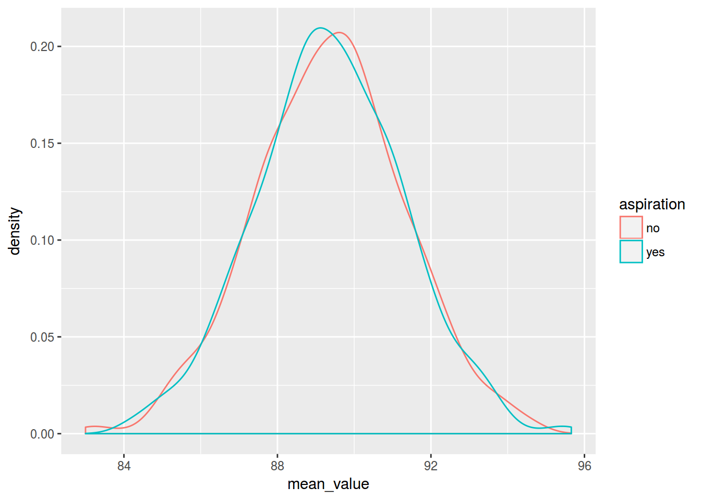
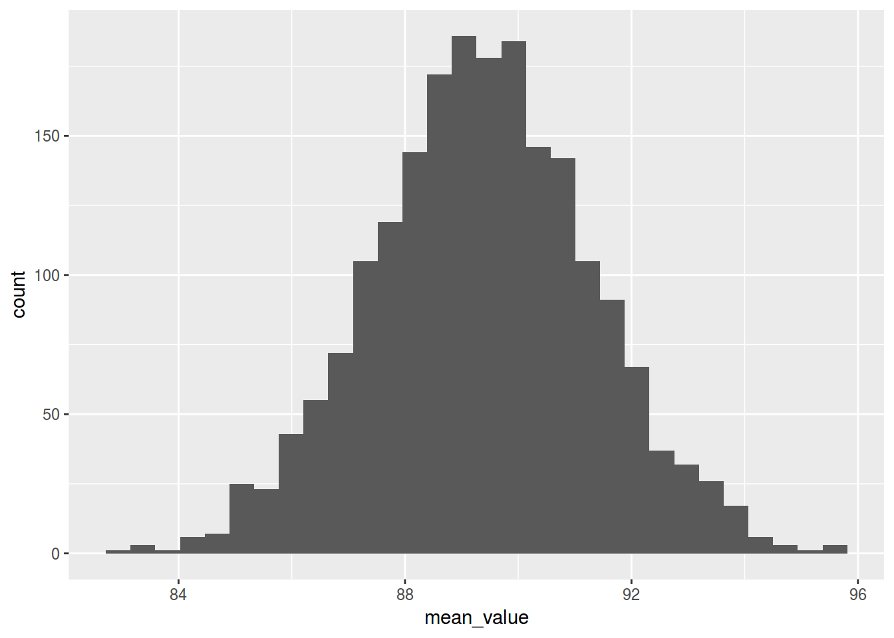

library(tidyverse)
df <- read.csv("https://goo.gl/7gIjvK")
df %>%
filter(aspiration == "yes",speaker == "tt01") %>%
select(vowel.dur) ->
asp_vowel_duration
library(bootstrap)
set.seed(42)
bootsraped_1 <- bootstrap(asp_vowel_duration$vowel.dur,
nboot = 1000,
theta = mean)
str(bootsraped_1)## List of 5
## $ thetastar : num [1:1000] 77.8 81.3 79.9 75.5 77.5 ...
## $ func.thetastar: NULL
## $ jack.boot.val : NULL
## $ jack.boot.se : NULL
## $ call : language bootstrap(x = asp_vowel_duration$vowel.dur, nboot = 1000, theta = mean)bootsraped_2 <- bootstrap(asp_vowel_duration$vowel.dur,
nboot = 1000,
theta = sd)
str(bootsraped_2)## List of 5
## $ thetastar : num [1:1000] 16.9 15.3 14.6 17.2 21.1 ...
## $ func.thetastar: NULL
## $ jack.boot.val : NULL
## $ jack.boot.se : NULL
## $ call : language bootstrap(x = asp_vowel_duration$vowel.dur, nboot = 1000, theta = sd)trimed_mean <- function(x){
q <- quantile(x, probs = c(0.05, 0.95))
x <- x[x > q[1] & x < q[2]]
mean(x)
}
set.seed(42)
bootsraped_3 <- bootstrap(asp_vowel_duration$vowel.dur,
nboot = 1000,
theta = trimed_mean)
str(bootsraped_3)## List of 5
## $ thetastar : num [1:1000] 77 80.9 80.5 75.4 77.4 ...
## $ func.thetastar: NULL
## $ jack.boot.val : NULL
## $ jack.boot.se : NULL
## $ call : language bootstrap(x = asp_vowel_duration$vowel.dur, nboot = 1000, theta = trimed_mean)df %>%
filter(speaker == "tt01") %>%
select(vowel.dur, aspiration) ->
vowel_duration
library(mosaic)
set.seed(42)
do(1000) * (
vowel_duration %>%
mutate(vowel.dur = shuffle(vowel.dur)) %>%
group_by(aspiration) %>%
summarise(mean_value = mean(vowel.dur))) ->
many.shuffles
tail(many.shuffles)## # A tibble: 6 x 4
## aspiration mean_value .row .index
## <fctr> <dbl> <int> <dbl>
## 1 no 91.08676 1 998
## 2 yes 87.66137 2 998
## 3 no 88.88635 1 999
## 4 yes 89.83677 2 999
## 5 no 90.55649 1 1000
## 6 yes 88.18561 2 1000many.shuffles %>%
ggplot(aes(mean_value, color = aspiration))+
geom_density(alpha = 0.5)
many.shuffles %>%
ggplot(aes(mean_value))+
geom_histogram()